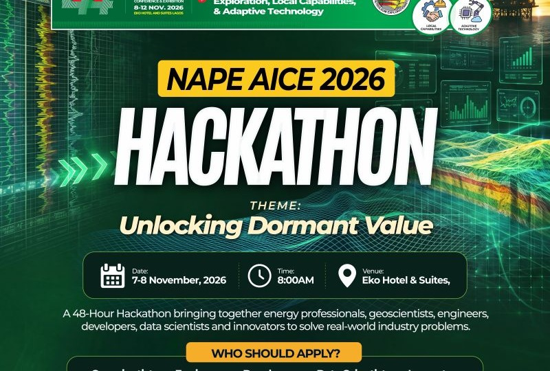

Promise Ekeh
AI Engineer
I'm a Senior AI/ML Engineer with 6+ years of experience designing, building, and deploying machine learning and generative AI systems across health-tech, energy, and enterprise technology sectors. I hold an MSc in Petroleum Geoscience from Imperial College London and a BSc in Geology from the Federal University of Petroleum Resources. My work spans evaluating and optimising AI models, building end-to-end ML pipelines, and delivering scalable solutions in cloud environments, with hands-on expertise in model lifecycle management, LLM integration, and agentic AI research. I'm adept at working across the full ML lifecycle, from data engineering and experimentation to production deployment, translating complex data into actionable insights for stakeholders in fast-paced, cross-functional environments.
Contact meTechnical Skills
AI & Generative AI
LLMs, agentic AI systems, supervised fine-tuning (SFT), and RLHF principles. Prompt engineering, NLP & text analytics, and model interpretability & explainability.
Model Lifecycle & MLOps
MLflow and ClearML for model evaluation, quantisation, and lifecycle tracking. Model optimisation (pruning, distillation, LoRA), Docker, Airflow, GitHub Actions (CI/CD), and ETL automation.
Cloud & Infrastructure
AWS (EC2, S3) for deployment and storage, exposure to Azure, and Databricks for data/ML workflows. Git/GitHub for version control and collaboration.
ML & Data Science
Supervised & unsupervised learning (regression, classification, clustering), feature engineering, and A/B testing & causal inference. Time series forecasting, anomaly detection, and EDA & KPI design.
Programming & Data
Python (PyTorch, TensorFlow, Scikit-learn, Pandas, NumPy, SciPy, FastAPI), SQL, PySpark, and Jupyter.
Visualisation & BI
Power BI, Tableau, and Plotly for insight-driven dashboards that communicate findings clearly to technical and non-technical audiences alike.
Leadership & Collaboration
Stakeholder management, executive communication, and Agile/Scrum (Certified Scrum Master). Mentoring and workshop facilitation.
Relevant Projects

NAPE AICE 2026 Hackathon — Programme Lead
Leading the design and delivery of a 48-hour AI hackathon at NAPE's 2026 Annual International Conference & Exhibition, themed "Unlocking Dormant Value" — focused on unlocking value from legacy energy data. I designed the challenge framework, participant screening and interview process, data strategy, technical requirements, training programme, and judging criteria, while coordinating a multidisciplinary delivery team and wider NAPE stakeholders.
Empower Her — Empower the Future
Founded by Promise Ekeh, Empower the Future Innovators Initiative runs Empower Her, a program providing digital literacy training, mentorship, and access to technology for young girls. Its inaugural workshop on 7 March 2025 drew 300+ attendees; Phase 2 selected 30 girls for a year-long mentorship programme now concluding.

CODE April
CODE April is a 30-day coding challenge designed by Promise Ekeh to enhance coding skills, foster continuous learning, and engage participants in coding-related activities throughout the month of April.

Litholog Prediction Using Machine Learning
This project applies three ML classification algorithms (XGboost, Random Forest & CATboost) to predict lithology from well logs in the oil and gas industry.

Daily Climate Time Series Analysis
This project analyses and visualises weather data collected from Delhi over several years to uncover trends, seasonal patterns, and correlations in weather variables.

Python Projects
A compilation of projects illustrating the applications of Python in data analysis, data science, and machine learning.

Power BI Projects
This collection of projects showcases the robust capabilities of Power BI for data visualization and business intelligence.

Trainings
Projects related to training sessions and workshops covering key topics in data science, machine learning, and data visualization.
YouTube Contents
Conferences & Public Speaking Invitations